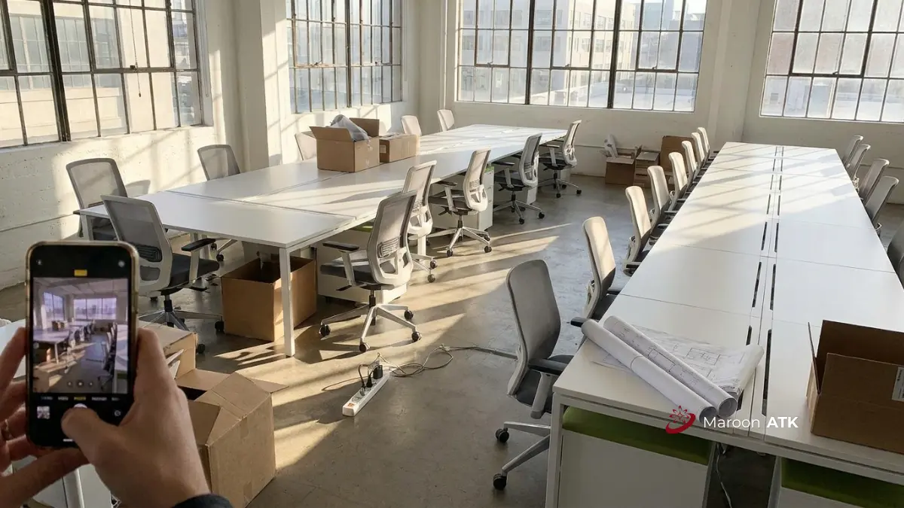

Mengapa Korporat di Jakarta Memilih Interactive Flat Panel 86 Inch?
Maroon ATK sebagai vendor interactive flat panel Indonesia berpengalaman menangani instalasi IFP 86 inch di korporat Jakarta untuk memastikan integrasi video conference Zoom dan Microsoft Teams berjalan lancar tanpa kendala teknis sejak hari pertama penggunaan.
Korporat modern di Jakarta memilih interactive flat panel 86 inch karena ukuran panel jumbo ini secara khusus dirancang untuk aula seminar, auditorium, dan boardroom eksekutif dengan kapasitas 20 hingga 50 orang. Di ruang berdimensi besar, display konvensional atau proyektor sering terkendala oleh cahaya lampu ruangan (washout) dan resolusi buram.
Dalam studi kasus instalasi di salah satu korporat multinasional kawasan SCBD Jakarta, kebutuhan utama direktur IT dan General Affairs adalah menyederhanakan alur rapat hybrid. Interactive flat panel menggabungkan fungsi monitor 4K anti-glare, webcam video conference sudut lebar, mikrofon peredam bising, papan tulis digital dengan anotasi multi-touch, dan screen sharing nirkabel dari laptop peserta dalam satu perangkat ramping tanpa kabel berserakan di meja rapat.
Apa Spesifikasi Teknis Interactive Flat Panel yang Wajib Diperhatikan?
Sebelum memutuskan investasi pengadaan interactive smart board, tim IT dan pengadaan wajib memverifikasi lima parameter spesifikasi teknis berikut:
| Parameter Teknis | Spesifikasi Standar Korporat | Fungsi Operasional |
|---|---|---|
| Resolusi & Panel | 4K Ultra HD (3840 × 2160 piksel), Panel D-LED / IPS, Sudut Pandang 178° | Teks spreadsheet dan bagan presentasi terlihat tajam dari sudut ruang manapun. |
| Teknologi Layar Sentuh | Infrared Ultra-Fine Touch, 20–40 Touch Points, Akurasi Stylus 1mm, Latensi <8ms | Menulis di layar terasa seringan menulis spidol pada papan tulis fisik tanpa delay. |
| Daya Tahan Kaca | Tempered Glass Anti-Glare 7H Mohs, Tebal 4mm, Anti-Shatter | Tahan terhadap benturan benda keras dan bebas pantulan lampu plafon kantor. |
| Dual Operating System | Android 13/14 bawaan + Slot OPS Modul Windows 11 Pro (Intel Core i5/i7, 16GB RAM) | Bisa langsung dipakai cepat via Android atau menjalankan software ERP/CAD via Windows. |
| Konektivitas Lengkap | Full-Function Type-C (Display + Touch + Charging 65W), HDMI In/Out, LAN Gigabit, Wi-Fi 6 | Koneksi 1 kabel laptop langsung menampilkan gambar, transfer touch, sekaligus mengisi daya baterai. |
Bagaimana Interactive Flat Panel Terintegrasi dengan Zoom dan Teams?
Interactive flat panel terintegrasi dengan Zoom Rooms dan Microsoft Teams melalui kombinasi kamera 4K auto-framing cerdas bertenaga AI, mikrofon array 8 arah, dan slot OPS Windows yang menjalankan aplikasi video conference secara mandiri (native).
Dalam implementasi proyek korporat di Jakarta, tantangan umum ruang rapat besar adalah suara peserta di baris belakang yang sering tenggelam. Mikrofon array 8 arah bawaan IFP memiliki jangkauan penangkapan suara sensitif hingga 8–10 meter dengan algoritma acoustic echo cancellation dan noise suppression cerdas, sehingga suara setiap peserta terdengar jernih oleh lawan bicara online tanpa perlu mikrofon meja tambahan.

Tampilan antarmuka split-screen pada Interactive Flat Panel 86 Inch yang menjalankan konferensi video Zoom bersamaan dengan papan tulis digital Teams Whiteboard.
Bagaimana Prosedur Instalasi dan Garansi Interactive Flat Panel?
Prosedur instalasi interactive flat panel oleh tim teknisi MAROON ATK mencakup inspeksi ketebalan dinding partisi, pemasangan wall-bracket heavy duty anti-jatuh, pengaturan jalur kabel tersembunyi (cable trunking), commissioning test kelistrikan, hingga penerbitan Berita Acara Serah Terima (BAST).
Seluruh unit IFP yang dipasok MAROON ATK dilengkapi garansi resmi 1 hingga 3 tahun penuh yang mencakup penggantian panel layar sentuh, motherboard controller, Power Supply Unit (PSU), dan modul OPS Windows, didukung oleh teknisi tersertifikasi yang siap memberikan layanan on-site service di lokasi kantor Anda.
Bagaimana Cara Memesan Interactive Flat Panel di 5 Kota Layanan MAROON ATK?
MAROON ATK siap melayani pengadaan dan instalasi interactive flat panel di lima kota metropolitan Indonesia. Berikut panduan pemesanan dan jalur konsultasi teknis cepat via WhatsApp resmi untuk tiap wilayah:
| Kota Layanan | Konteks Pengadaan & Instalasi | Jalur Konsultasi Resmi |
|---|---|---|
| Jakarta | Penyesuaian izin kerja gedung perkantoran Grade A/B (fit-out deposit dan instalasi malam/akhir pekan). | Chat IFP Jakarta |
| Surabaya | Koordinasi instalasi untuk ruang rapat korporat dan kantor pusat kawasan industri Jawa Timur. | Chat IFP Surabaya |
| Malang | Pengadaan smart classroom digital untuk kampus, sekolah unggulan, dan aula pelatihan. | Chat IFP Malang |
| Denpasar | Pengiriman aman antar pulau dan perlindungan komponen terhadap tingkat kelembapan iklim pesisir. | Chat IFP Denpasar |
| Makassar | Pusat pengadaan terintegrasi untuk instansi pemerintah dan BUMN kawasan Indonesia Timur. | Chat IFP Makassar |
Sebagai vendor interactive flat panel yang juga berpengalaman dalam pengadaan paket furniture ruang rapat serta suplai kebutuhan ATK operasional, MAROON ATK siap membantu instansi Anda menyatukan seluruh kebutuhan fasilitas kerja dalam satu pintu kontrak yang praktis dan efisien.
Pertanyaan yang Sering Diajukan (FAQ)
IFP menggabungkan fungsi display 4K, video conference, papan tulis digital, dan kolaborasi nirkabel dalam satu perangkat tanpa memerlukan ruangan gelap seperti proyektor.
Bisa, IFP dilengkapi kamera 4K auto-framing, mikrofon array, dan slot OPS Windows sehingga dapat menjalankan aplikasi video conference seperti Zoom dan Teams secara langsung.
Garansi resmi IFP idealnya berdurasi 1 hingga 3 tahun, mencakup panel layar sentuh, motherboard kontroler, PSU, dan modul OPS.

Asher Angelica
Konsultan sistem integrasi audiovisual korporat dan ruang rapat cerdas (smart boardroom). Berpengalaman mengelola instalasi ratusan unit Interactive Flat Panel, Videotron LED, dan display digital di berbagai institusi pemerintahan dan korporat terkemuka di Indonesia.